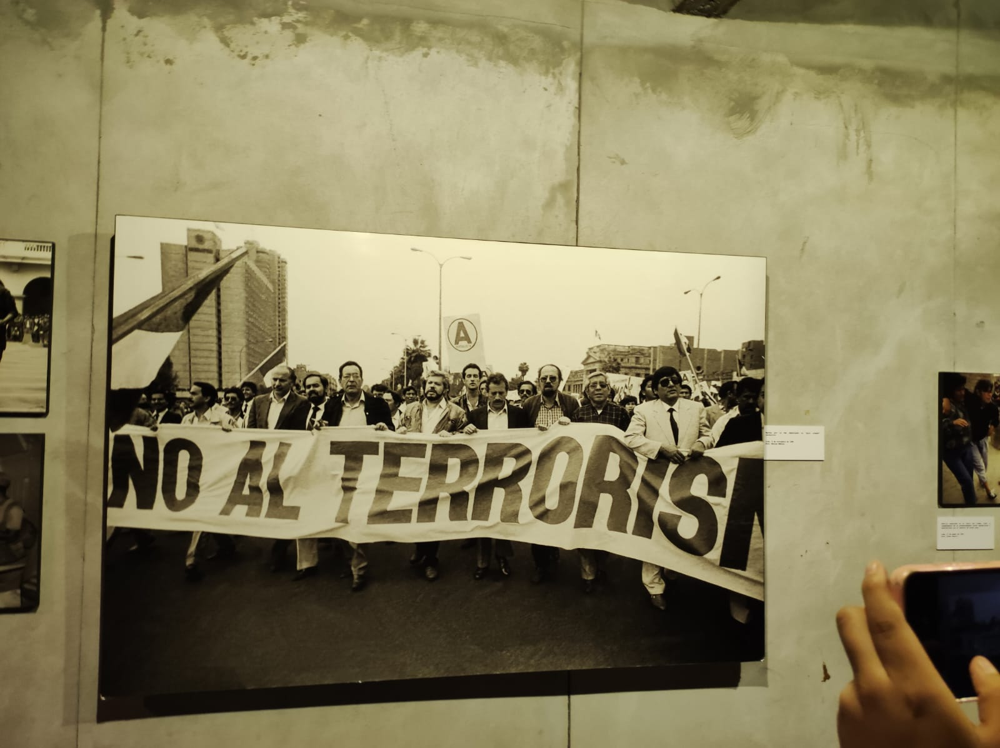
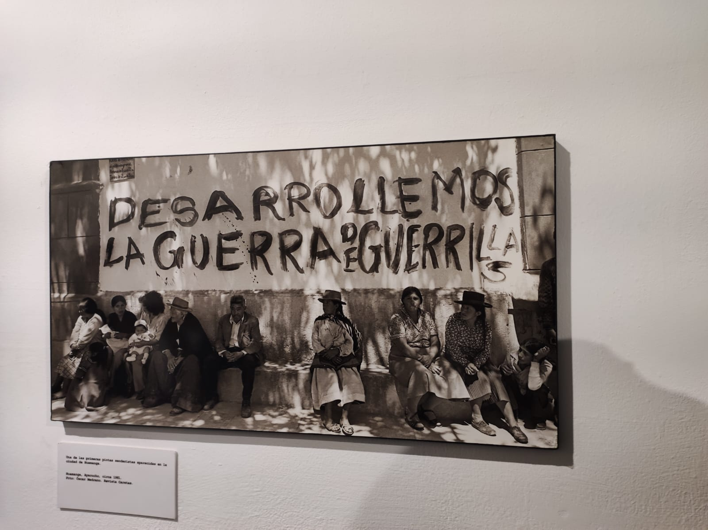
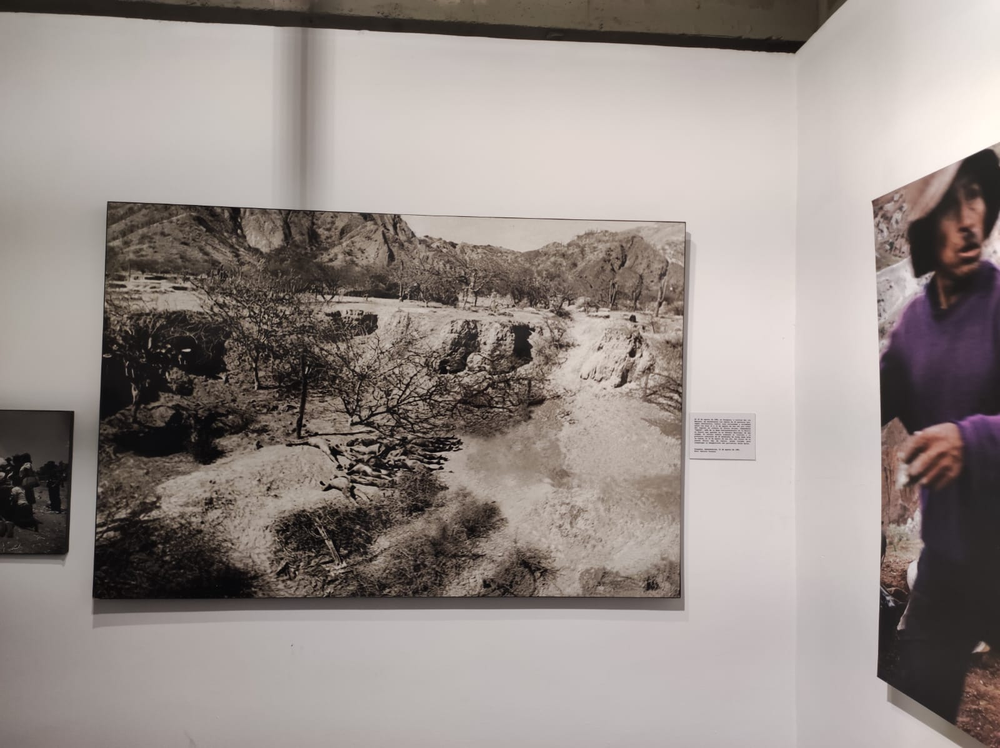
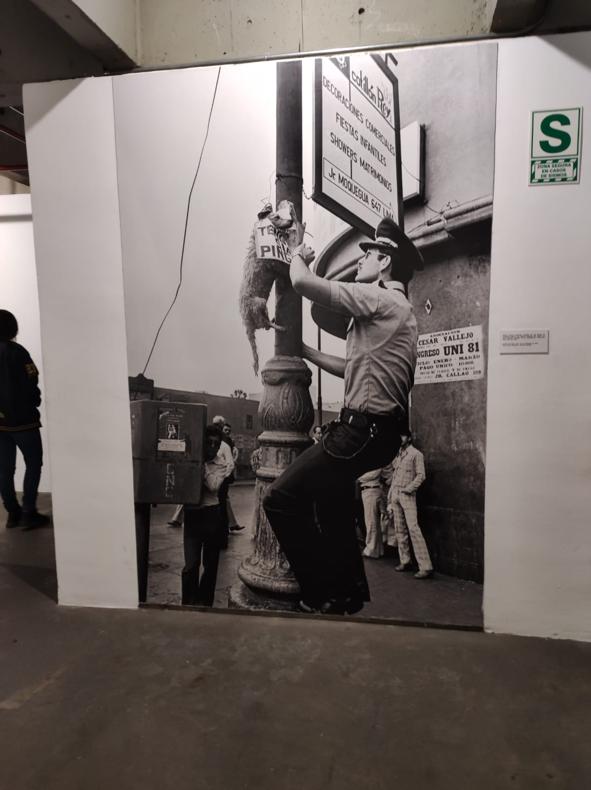
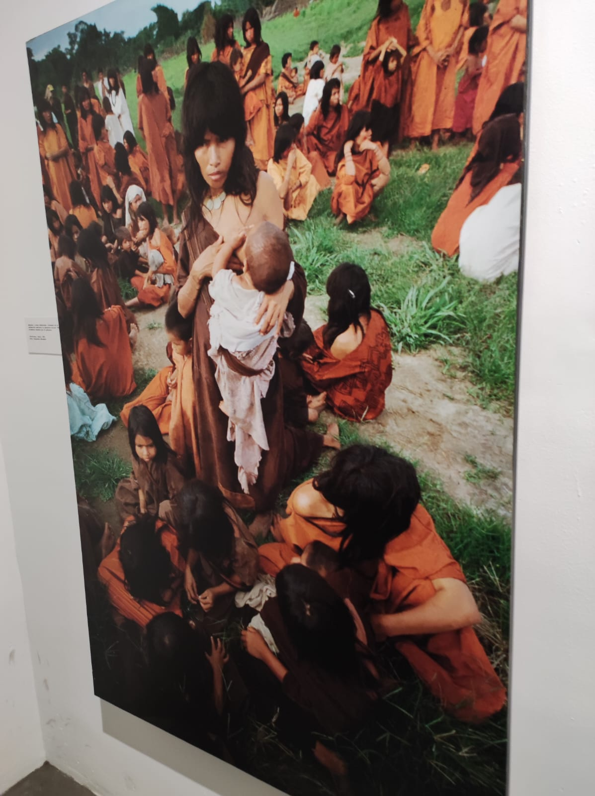
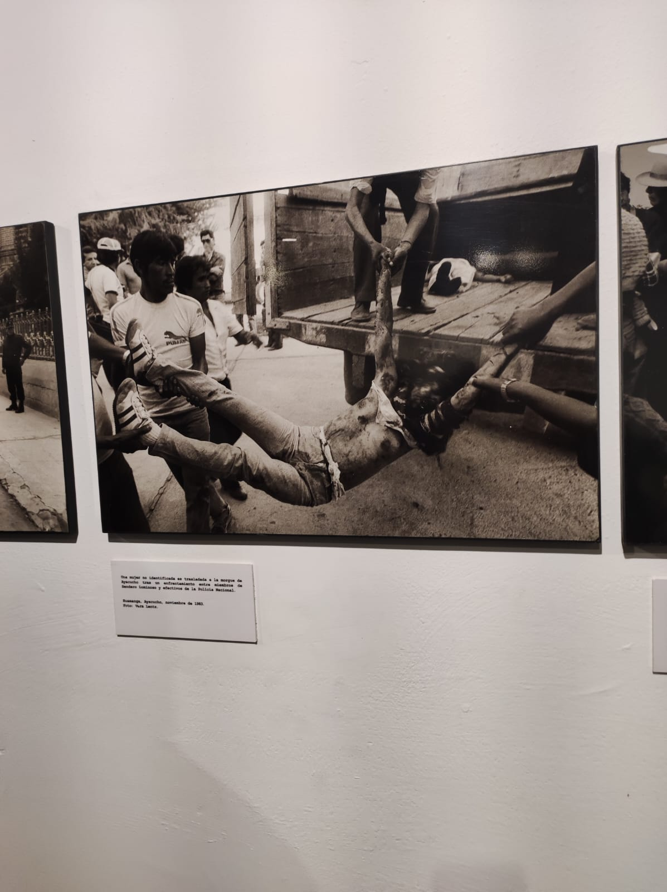
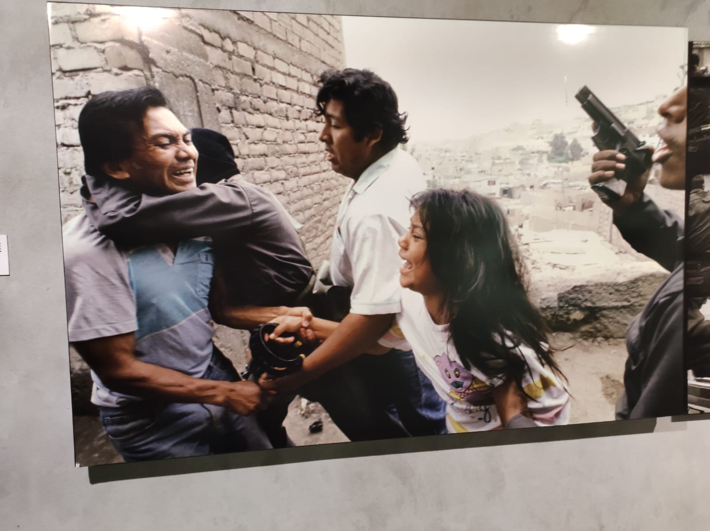
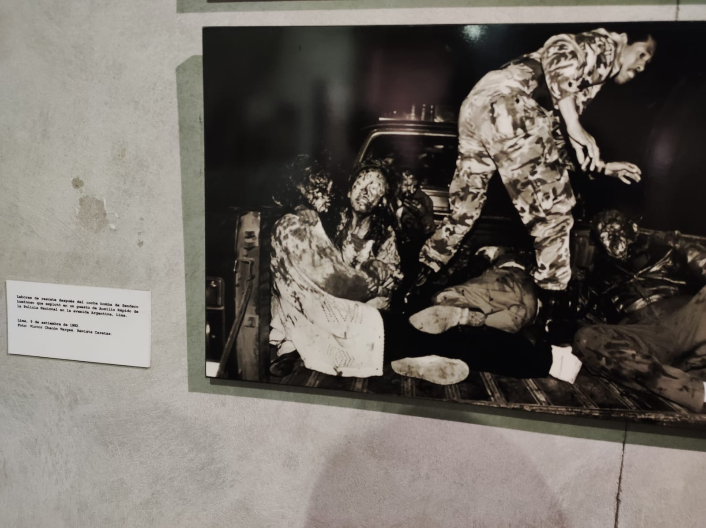
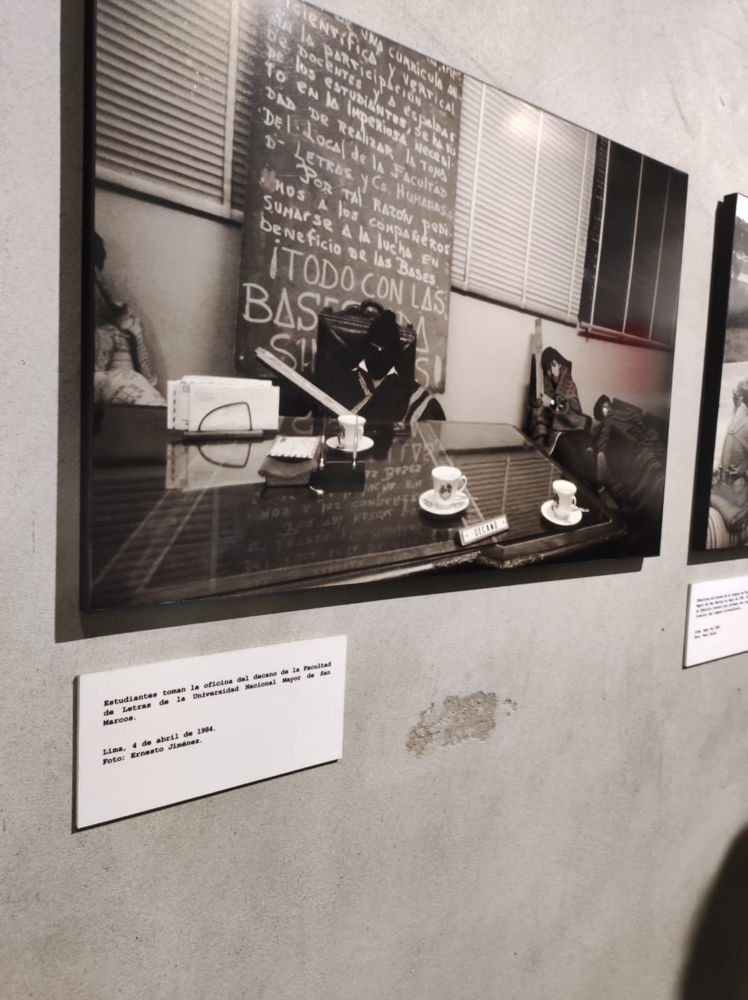
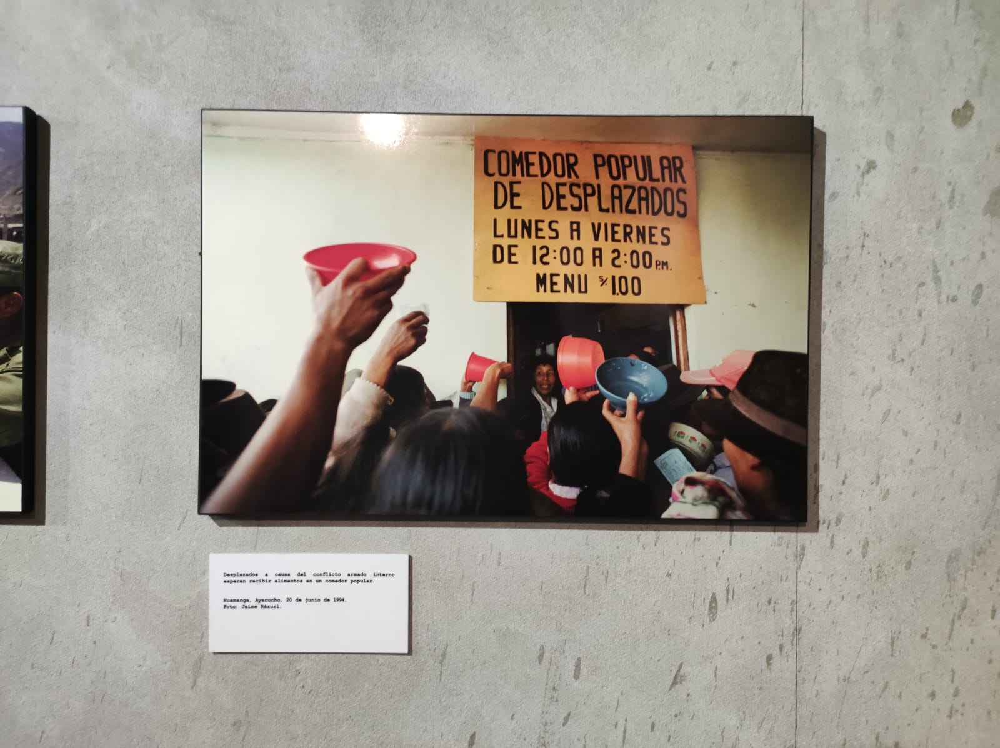

Muestra fotográfica Yuyanapaq. Para Recordar
Empezamos el recorrido entrando al Ministerio de Cultura, Defensoría del Pueblo YUYANAPAQ (Para recordar).

Empezamos el recorrido entrando al Ministerio de Cultura, Defensoría del Pueblo YUYANAPAQ (Para recordar).
Se realiza una marcha por la paz, desafiando un parto armado senderista.
Una de las primeras pintas senderistas, aparecida en Huamanga.
El 23 de Agosto de 1984, se encontraron restos que habían sido torturados por orden del capitan de coberta Alvaro Artaza.
Donde se pronuncia Teng Xiaoping: Abimael Guzmán consideraba que el tema nacional chino tenía que ver con el peruano, y Teng Xiaoping merecía morir como un perro tras traicionar China.
Mujeres y niños ashánincas, liberados de un campamento senderista mediante la operación militar "Ene".
Una mujer es llevada a la morgue, después de haber sufrido en el ataque entre los SENDERISTAS y los efectivos de la policía nacional.
La detención a un hombre acusado de pertenecer al grupo senderista. Tras el autogolpe del 5 de abril, el gobierno de Alberto Fujimori promulgó la ley que permitió detenciones y juzgamientos arbitrarios.
Labores de rescate después del coche bomba del Sendero Luminoso que exploto en un puesto de Auxilio Rápido de la Policía Nacional, en la avenida Argentina.
Estudiantes toman la oficina del decano de la Facultad de Letras de la Universidad Nacional Mayor de San Marcos.
Desplazados a causa del conflicto armado interno esperan recibir alimentos en un comedor popular.
